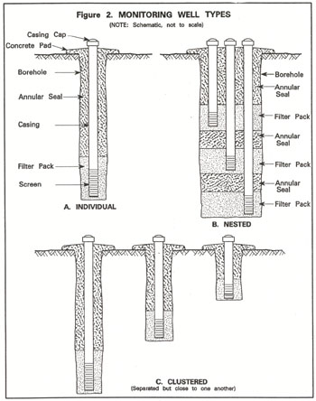
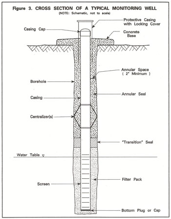

|
For the purpose of these standards, the term "monitoring well" is limited to wells designed to monitor subsurface water in the saturated zone, existing at or above atmospheric pressure (groundwater); rather than water, water vapor, and/or gases contained in the unsaturated or vadose zone. Monitoring devices used for the unsaturated zone differ significantly from those used for the saturated (groundwater) zone.  As shown in Figure 2, three basic types of monitoring wells or "installations" are:
Individual monitoring wells consist of a single casing "string" within a borehole, as illustrated in Figures 2 and 3. Individual monitoring wells are installed in unique locations apart from one another. They are the most common type of monitoring well constructed in California. Nested monitoring wells consist of two or more casing strings within the same borehole. Normally the screened interval of each casing string is designed to obtain water from different aquifers or water-bearing zones. The purpose of a nested monitoring well is much the same as clustered monitoring wells.  Clustered monitoring wells consist of individual monitoring wells situated close together, but not in the same borehole. The wells within a cluster are normally constructed to obtain water from different aquifers or water-bearing zones. Clustered wells are most often used for monitoring groundwater conditions at various depths in roughly the same area. A nested monitoring well can be difficult to construct because of multiple casings within the same borehole. Care is required during construction to ensure water-bearing zones for each casing string are hydraulically isolated from one another and the annular seals are effective. Some regulatory agencies may prohibit the use of nested monitoring wells for certain contamination or pollution investigations. Normally this can be due to uncertainties about whether water-bearing strata can be isolated and whether the annular seals in a nested well are always effective. Individual casing strings for the various types of monitoring wells discussed above, are sometimes designed to obtain water from more than one aquifer or water-bearing unit. These casing strings usually have multiple intervals of openings or screen. Such well casing strings, often referred to as "multi-level monitoring wells," can sometimes serve as a preferential pathway for the movement of poor quality water, pollutants, and contaminants from one unit to another. Some regulatory agencies prohibit the use of multi-level monitoring wells for certain pollution or contamination investigations out of concern for water quality protection and data quality requirements. |
| Previous Section Table of Contents Next Section |